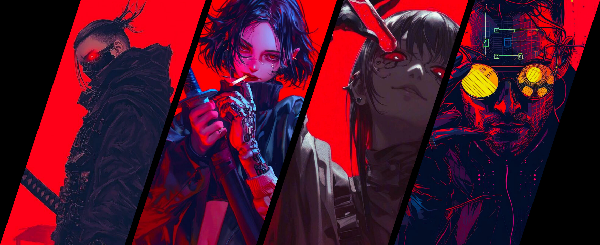
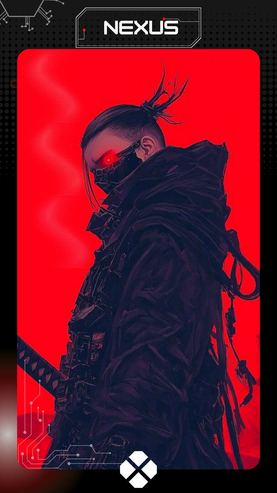
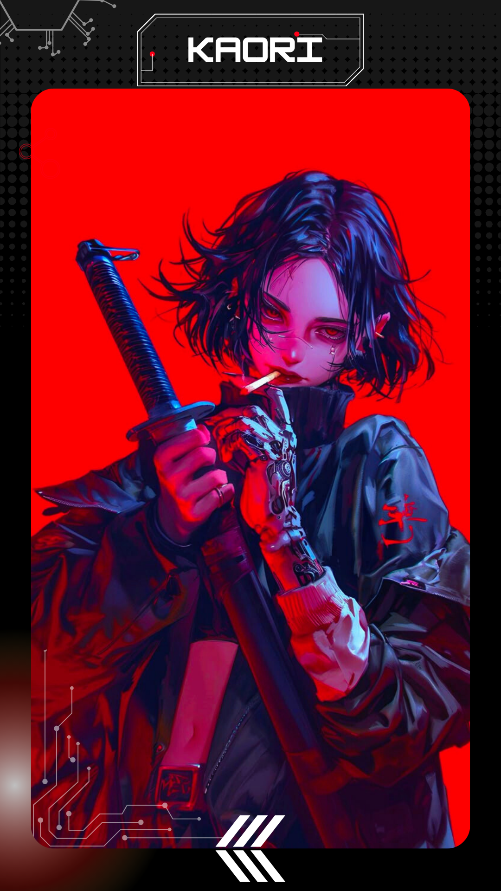
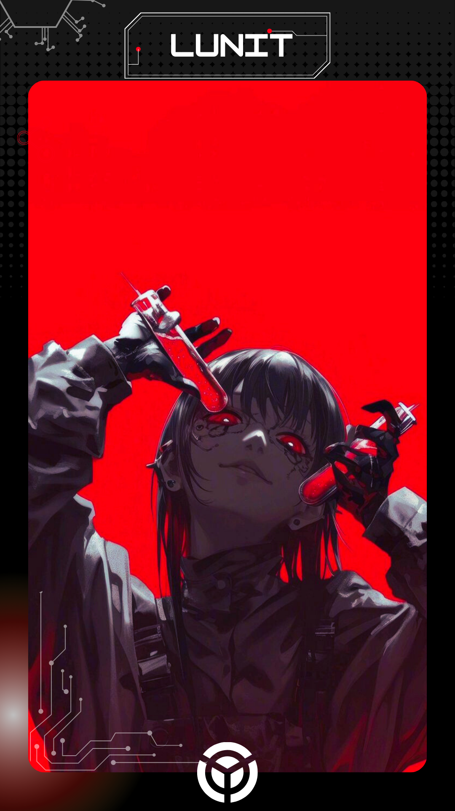
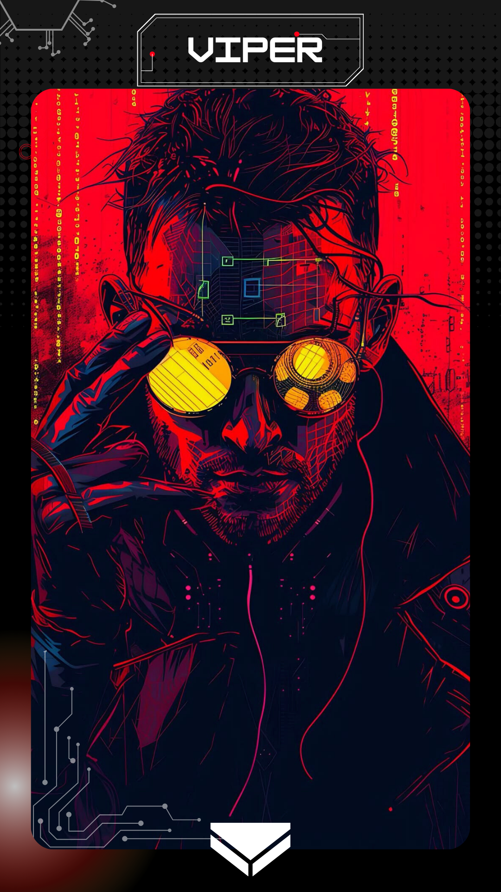

神経リンク — NEURAL LINK PROTOCOL

Em 2247, o controle das maquinas sobre humanos é quase completo. Até que um Cyborg se rebela, e decidi salvar outras cobaias. Logo de inicia uma luta contra a I.A que quer exterminar a última resistência humana. O futuro depende de um fugitivo rebelde, Project-NEXUS-Zero.




TEMPORADA 1
Episódios
01
DESPERTAR
Um soldado começa a duvidar dos seus proposistos, e questionar seus
deveres, e acaba, tomando uma decisão que mudará para sempre seu fututo
02
PROTOCOLO VERMELHO
A IA central identifica uma invasão e ativa um protocolo de segurança. Onde soldados seguem a seus postos.
03
RESGATE
Nexus invade o setor Z-02 em busca de sua irmã Kaori, para desconectar o chip bloqueador de memória
04
VELHOS COMPANEHIROS
Durante a fuga Nexus se depara com dois rostos conhecidos, e por um momento de impulso libertar esses dois soldados.
05
NLP - NEURAL LINK PROTOCOL
Nexus chega a um setor, vazio e explica a situação, e diz que tem pouco tempo pra remover o chip dos companheiros, antes que seja ativado o protocolo de controle neural.